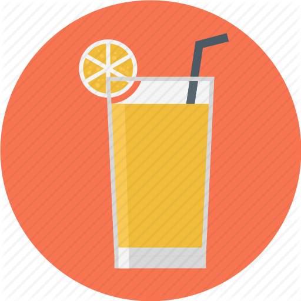

OBESITY
CHILDHOOD STATISTICS
1 IN 3
children and
adolescents (age 2-19)
ARE OVERWEIGHT
OR OBESE
and almost NONE meet
recommended healthy diet and
physical activity amount.
An estimated
12.5
MILLION
children (age 5 years or
younger),spend
33 HOURS/WEEK
in child care centers and
consume nearly all of their
daily calories.
OBESITY IS LINKED
TO MORE CHRONIC
CONDITIONS THAN:
increasing the risk of more than 20 preventable diseases,including sleep
apnea,asthma,heart disease,Type 2 diabetes,osteoarthritis,high blood
pressure and high cholestrol stroke.
RISK FACTORS
Children in their early teen who are
obese and who have high triglyceride
levels have arteries similar to those
of 45 year olds.
Obese children as young as age 3
show indicators for developing heart
disease later in life.
Children who are overweight from
the ages of 7 to 13 may develop
heart disease as early as age 25.
Obese children are twice as likely
to die before age 55 than their
slimmer peers.
FRENCH FRIES
are the most common vegetable
that children eat comprising
25%
of their vegetable intake

JUICE
(which may lack important fibre
found in whole fruit) makes up
40%
of children's daily fruit intake
40% to 50% OF
TODDLERS
watch more television than is recommended.
NEARLY 1/2 OF
PRESCHOOLERS
don't get enough physical activity.
The cost of obesity in the
United States is staggering
totalling about
$147
BILLION
CHILDREN WHO
EAT HEALTHY
FOODS AND GET
DAILY PHYSICAL
ACTIVITY HAVE:
Fewer scchool absences
Higher academic achievements
Higher self esteem
Fewer behavioral problems